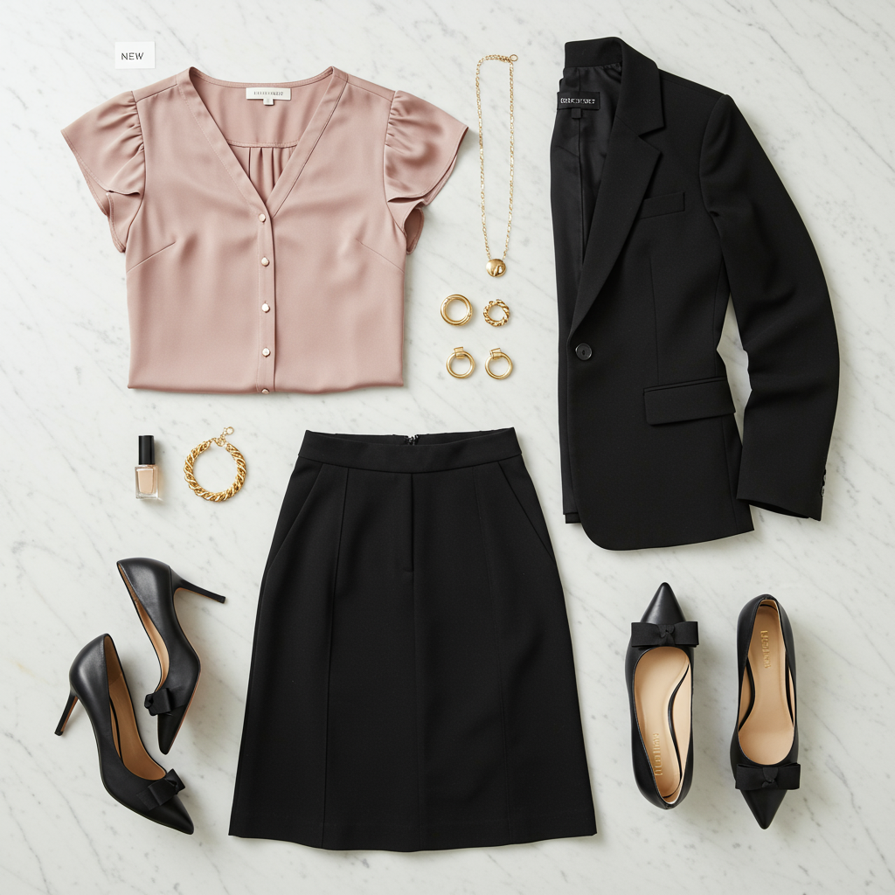

White House Black Market
Flutter-Sleeve Satin Shirt
$59.25 $79.00
This feminine satin shirt features gold buttons that add a touch of shine, with flutter sleeves and a flattering Y-neckline. Versatile enough for office wear with trousers or casual dining with jeans. Made from 96% recycled polyester, 4% spandex. Length: 25".
Shop This ItemWhy This Pick
Your wardrobe is heavy on navy (12 tops) and black (10 tops) with only 2 pink pieces. This warm pink satin blouse fills that color gap beautifully while staying work-appropriate. The satin fabric and gold buttons elevate it beyond a basic top, and the flutter sleeves add a feminine touch that's very much your style DNA. Pairs effortlessly with your existing black skirts, navy trousers, and blazers.
Style It With Your Wardrobe
Flat-lay outfit ideas pairing this piece with items you already own

Power Meeting
Pinkberry satin shirt + Black ponte midi skirt (#119) + Black single-button blazer (#207) + Black kitten heel pumps (#517). The pink against all black is executive-chic with a feminine edge.